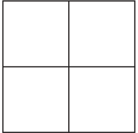
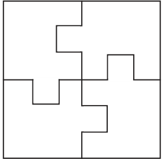
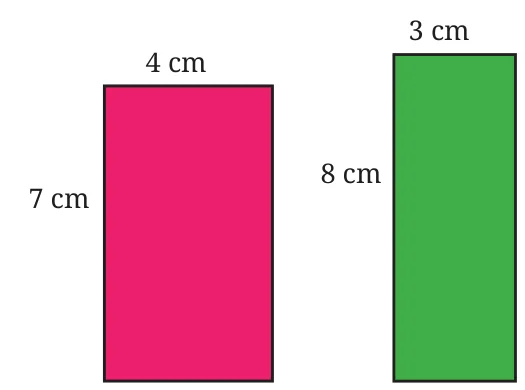
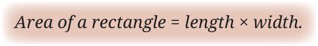
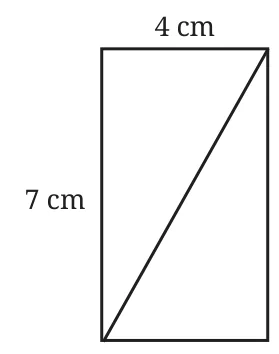

How many different ways can you divide a square into 4 parts of equal area? One can actually think of infinitely many such ways! Consider a division, such as -

and alter each part as follows.

In each part, the area is compressed along one edge and expanded along another edge. If both the compression and expansion are of the same magnitude, then all 4 parts still have the same area! Try to think of different creative ways to divide a square into 4 parts of equal area.
You might have seen the rangoli art form, in which regions of different shapes are beautifully coloured using rangoli powder.

Which of these rectangles requires more rangoli powder to be coloured, if the colouring is done evenly?
We can answer this by counting the number of non-overlapping unit squares (squares of sidelength 1 cm in this case) that can be packed into each of the rectangles.
Clearly, the rectangle having sidelengths 7 cm and 4 cm contains \(7 \times 4 = 28\) unit squares, and the rectangle having sidelengths 8 cm and 3 cm contains \(8 \times 3 = 24\) unit squares.
Thus, the rectangle of sidelengths 7 cm and 4 cm requires more powder to be coloured.
Recall that we measure the area of a region by finding the number of unit squares (which can also be a fraction) whose area equals that of the given region.
We have seen that the number of unit squares contained in a rectangle is given by the product of its length and width —

The areas of the rectangles as seen in the previous problem are generally written as 28 sq. cm and 24 sq. cm, or as 28 cm\(^2\) and 24 cm\(^2\).

What is the area of each triangle in this rectangle?
We have seen that the diagonal of a rectangle divides it into two congruent triangles. So, the area of each triangle is half the area of the rectangle.
In terms of unit squares, half the area fills exactly half the number of unit squares.
So the area of each triangle is \(\frac{1}{2} \times 7 \times 4 = 14\) cm\(^2\).